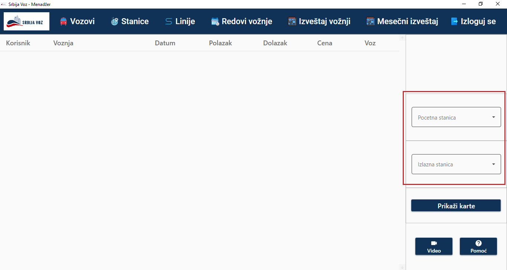
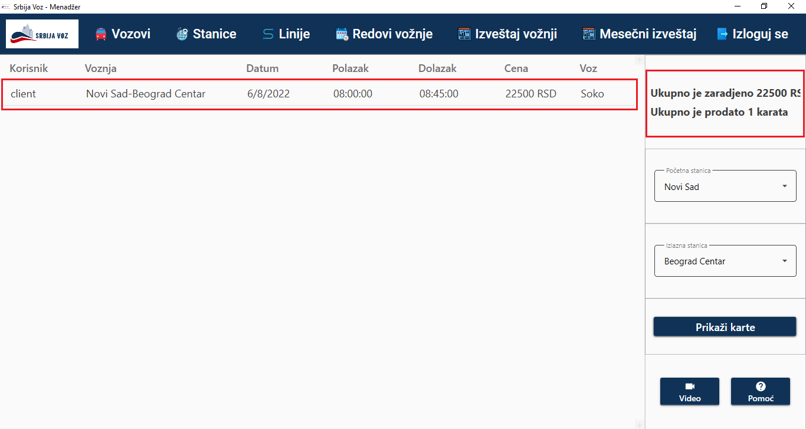

Izveštaj o prodatim kartama na nivou vožnje
U ovoj sekciji biće prikazano korišćenje stranice za prikaz izveštaja o prodatim kartama na nivou vožnje
Da bi se prikazao izveštaj potrebno je uneti početnu i krajnju stanicu u zaokružena polja sa desne strane i pritisnuti dugme "Prikaži karte".
Nakon toga se u tabeli prikazuju prodate karte, a u gornjem desnom uglu je prikazana ukupna zarada i broj prodatih karata.
